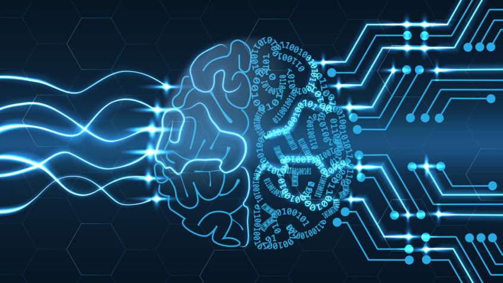

January 29, 2020
The technological development of Artificial Intelligence(AI) is progressing at an increasing speed. The arithmetic of AI has long surpassed human abilities, and it extends beyond human creativity and intuition. Humans no longer need to store or judge data in their brains and they do not necessarily need to be an expert. Rather, human beings will need humility and courage to know their limitations and to commit themselves to machine decisions. AI can enrich human life and lead to destruction depending on how humans use it. High-impact technology, such as AI, needs to be more wary of dysfunction. There are two main problems with the advances of AI.
The 2016 World Economic Forum (Davos Forum) predicts that more than 5 million jobs will be lost by 2020. In 2013, researchers from Oxford University predicted that 47% of U.S. jobs will be lost to automation in the next 20 years. In developing countries with many unskilled workers, the situation is even worse, with two-thirds of all jobs at risk of disappearing. Various studies point out that there is a high risk that simple labor and white-collar jobs will be lost to robots. But a highly knowledgeable job is also not safe. According to the Oxford University report, 'professionals' such as accountants, programmers, judges, economists and financial experts are likely to disappear. People thought that AI would not be easily accessible to jobs that require creativity, but recently, AI has been used in creative fields such as fiction writing or composition.
AI is also increasing inequality; widening the gap between the rich and the poor. The upper class with AI will develop into a tremendous amount of technology, but the difference in living standards will be very different from those who cannot have the AI. Even before that, wealth was concentrated in some classes, businesses, and countries, and that tendency is intensified. Large corporations and developed countries have the potential to invest in AI and robotics, but small and medium-sized and underdeveloped countries do not. Depending on the robot’ performance, the service will be uneven and the discomfort will continue to increase. Even if it becomes a monopoly, it is not a big problem if people can move their hierarchy. But if the hierarchy is fixed, and the middle class collapses, complaints will accumulate and confuse society. If human life and class movement become impossible, social change may eventually occur, leading to crisis in democracy. Yuval Noah Harari, the author of Sapiens, said, "The future is likely to be the most unequal society in history." We should consider how to resolve the gap between the rich and the poor so that gloomy predictions will not become reality.
In order to solve the above problems, social enterprises must be increased. Usually firms aim to make a profit. In other words, it is natural to pursue efficiency and integrity for the benefit of the enterprise, and it is certainly more efficient to use AI than humans. Social enterprises, on the other hand, aim for overall social development and profit. For example, AI can help the social minority to benefit from AI, such as solving the infectious disease situation in developing countries, or foretelling and reducing fine dust in advance. Furthermore, there are ways for countries to create their own social enterprises. The government first issues government bonds to build companies to guarantee jobs, and when the economy grows, the government collects government bonds and maintains a stable national system. If these social enterprises become larger, then we could solve the unemployment and inequality problems.
The development and expansion of artificial intelligence technology is fast, and the application area is gradually spreading. This has a tremendous ripple effect on our society. Therefore, we need to come up with side effects on its impact and countermeasures against various technical issues.